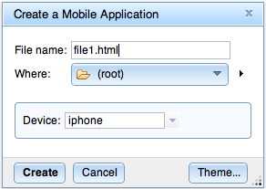
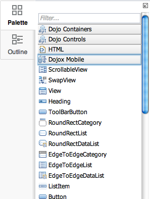
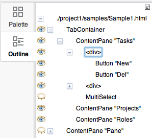
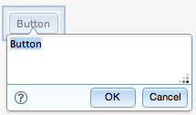

Create menu
|
To create a new mobile HTML5 application,
press on the Create menu and choose "Mobile Application".
After issueing this command, the "Create Mobile Application" dialog appears (as shown at right). Enter the file name for the new file, choose the initial mobile device (or accept the default), and then click "Create". The "Where" field indicates the parent folder for the new file. The drop down control shows the current target parent folder and will show a complete list of ancestor folders. The right arrow next to "Where" opens up a view of your current workspace and provides a "New folder" button in case you need to create a new folder. The "Theme..." button allows you to choose the initial CSS theme or theme set to use with the new HTML file. |
 |
Widgets Palette
|
The Palette contains the list of widgets that you can add to your document.
Maqetta presents a different list of "Suggested widgets" based on the current composition
type. For mobile applications, the Palette shows
common mobile widgets at the top of the list.
The three widgets found in the top section of the Palette (see image at right) are the "View" widgets. These widgets allow you to organize your mobile application into a series of "screens", where for sibling views exactly one of the views is visible at once. Maqetta includes special authoring support for these widgets, particularly with its Scenes palette:
|
 |
Outline palette
|
The Outline palette shows a hierarchy view of the widgets in your document.
You can reorder your widgets via drag/drop within the Outline palette. The Outline palette also includes a context menu which allows many of the same widget operations (e.g., delete) that are available on the page editor canvas. |
 |
Bottom/left palettes
|
Files shows your file system in the cloud (see image at right).
The Files palette toolbar includes commands for creating and managing projects,
creating and managing project templates, downloading files and uploading files. Reviews shows the list of review sessions which either you initiated or to which you have been invited. |
 |
Properties palettes
The various Properties palettes (Widget, Events, Layout, etc) are where you can change
widget-specific property values. The various sections are:
At the top of each of the various Properties palette are controls for setting the class and/or id values for the currently selected widget.
- Widget - This section lists widget-specific properties - e.g., a Checkbox widget has a "checked" property, whereas most other widgets will not have such a property. For most widgets, a 'title' property appears at the top. This corresponds to the HTML 'title' attribute and is often used for specifying tooltip text for a given widget.
- Events - Defines the actions to take when certain events occur on a particular widget. Includes mouse events (e.g., onclick) and focus events for text entry widgets (i.e., onfocus and onblur).
- Layout - Various CSS properties in the general area of layout. Includes CSS properties regarding size (e.g., 'width' and 'height') and location (e.g., 'left' and 'top'). Also includes CSS properties such as 'position', 'display', 'float', 'overflow' and 'opacity'.
- Padding - CSS padding properties, including the 'padding' shortcut and the specific properties 'padding-top', 'padding-right', 'padding-bottom' and 'padding-left'.
- Margin - CSS margin properties, including the 'margin' shortcut and the specific properties 'margin-top', 'margin-right', 'margin-bottom' and 'margin-left'.
- Background - CSS background properties. The "..." buttons can be used to bring up the Background dialog, which allows picking background image and defining gradients.
- Border - CSS border properties.
- Fonts/Text - CSS properties having to do with text styling.
- SVG - CSS properties that only apply to SVG content. These properties typically are used only for widgets from the Drawing Tools section of the Palette.
At the top of each of the various Properties palette are controls for setting the class and/or id values for the currently selected widget.
Scenes palette
The Scenes palette enables two things.
- Application states - Maqetta includes an "application states" feature which allows users to define interactivity without programming. With the application states feature, you can organize your application into different states, and then define which widgets are visible (or styled differently) in each different states. State changes can be triggered using the Events palette.
- Switching between Dojo Mobile Views - If you create a mobile application and include Dojo Mobile view widgets (View, ScrollableView or SwapView) in your application, the Scenes palette will show both the list of views, plus the hierarchy of views. You can easily switch between views by clicking on one of the view in the Scenes palette.
Visual design canvas
|
This area is where you create your HTML application.
To add widgets to the page, simply drag/drop widgets from the Palette to the canvas. When adding a new widget, sometimes Maqetta presents a data entry popup or dialog. On the right, you can see the data entry popup for a Button widget. You can click on the "?" icon to see what text entry options and rules apply to the format of the data for this particular widget. To adjust widget options and CSS properties, click to select a particular widget and then change properties using the right-side properties palette (e.g., Widget, Events, Layout, etc.). |
 |